Les influenceursInfluencers
- 1. Pourquoi on les aime ?1. Why do we love them?
- 2. Est-ce que c'est grave ?2. Is that a problem?
- 3. Comment faire plus attention ?3. How can we be more careful?
Click to play the video.
Qu'est-ce qui est une Fake News ?Which of these is fake news?
Cliquez sur chaque affirmation pour découvrir la réponse.Click each statement to reveal the answer.
Emmanuel Macron est président de la République.Emmanuel Macron is President of the Republic.
VRAITRUE
Vrai. Facile à vérifier : source officielle, plusieurs médias fiables le confirment.True. Easy to check: official source, confirmed by several reliable media.
La pyramide de Gizeh se trouve en Égypte.The Giza pyramid is located in Egypt.
VRAITRUE
Vrai. Fait géographique établi, vérifiable en quelques secondes.True. An established geographical fact, verifiable in seconds.
Le président a rencontré un alien.The president met an alien.
FAUXFALSE
Faux. Une image spectaculaire, même très réaliste (parfois générée par IA), ne remplace pas une source fiable. Une affirmation extraordinaire demande des preuves extraordinaires.False. A spectacular image, even a very realistic one (sometimes AI-generated), doesn't replace a reliable source. An extraordinary claim requires extraordinary evidence.
Le soleil est une étoile.The sun is a star.
VRAITRUE
Vrai. Fait scientifique établi depuis longtemps.True. A long-established scientific fact.
L'étoile du berger est une étoile.The "shepherd's star" is a star.
FAUXFALSE
Faux. C'est en réalité la planète Vénus, malgré son nom trompeur.False. It's actually the planet Venus, despite its misleading name.

L'association des Végans demande la fin des biscuits en forme d'animaux.A vegan association is demanding an end to animal-shaped biscuits.
FAUXFALSE
Faux. Un canular qui a beaucoup circulé sur les réseaux, jamais confirmé par une source sérieuse.False. A hoax that spread widely online, never confirmed by a serious source.

Il existe une espèce de méduse immortelle.There is a species of immortal jellyfish.
VRAITRUE
Vrai. Turritopsis dohrnii peut revenir à un stade juvénile et recommencer son cycle de vie.True. Turritopsis dohrnii can revert to a juvenile stage and restart its life cycle.
Êtes-vous influençable ?Are you easily influenced?
L'expérience d'Asch (1951) : des participants donnent volontairement une mauvaise réponse à une question simple, uniquement parce que tout le groupe la donne avant eux.Asch's experiment (1951): participants knowingly give a wrong answer to a simple question, purely because the whole group gave it before them.
Revivre l'expérience d'Asch sur CobayeRelive Asch's experiment on CobayeDéfinitionDefinition
Qu'est-ce qu'un influenceur ?What is an influencer?
Personne qui influence l'opinion, la consommation de son audience sur les réseaux sociaux.A person who influences the opinions and consumption habits of their audience on social media.
Ce que dit la loiWhat the law says
Influenceur, qu’est-ce que c’est ?What is an influencer?
La loi du 9 juin 2023 définit une catégorie d’influenceur : l’influenceur commercial.The French law of 9 June 2023 defines one kind of influencer: the commercial influencer.
Pour que cette activité soit lucrative, l’influenceur doit créer, fédérer et fidéliser son audience. Pour cela, il utilise des méthodes de communication… dont il faut parfois se méfier.For this to pay, the influencer has to build, unite and retain an audience. To do so, they use communication techniques… some of which call for caution.
C'est bien, un influenceur ?Are influencers a good thing?
Ça dépend !It depends!
Le ZEvent : des créateurs de contenu réunis pour collecter des dons pour des associations : plus de 10 millions d'euros récoltés en 2024.The ZEvent: content creators team up to raise donations for charities: over €10 million raised in 2024.
…et parfois non…and sometimes not
Un influenceur « trading » sanctionné par la répression des fraudesA "trading" influencer sanctioned by the fraud watchdog
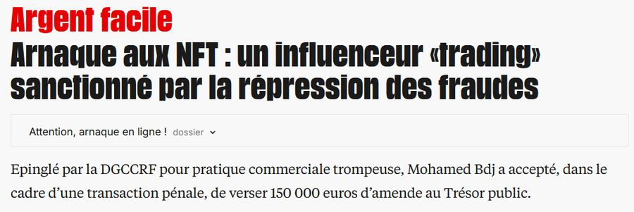
150 000 € d'amende pour pratique commerciale trompeuse, épinglé par la DGCCRF.A €150,000 fine for misleading commercial practice, flagged by France's consumer-fraud watchdog (DGCCRF).
Les différents types d'influenceursThe different types of influencers
Cliquez sur chaque profil.Click each profile.
Pourquoi on aime bien les influenceurs ?Why do we like influencers?
- Ils nous procurent des émotions (on rigole, on est bien).They give us emotions (we laugh, we feel good).
- Ils créent un sentiment de proximité.They create a sense of closeness.
- Ils nous font rêver.They make us dream.
RegardezWatch
Pourquoi est-ce qu'on se sent proche d'eux ?Why do we feel close to them?
Relations parasocialesParasocial relationships
Un lien à sens uniqueA one-way bond
Type de relation dans une seule direction : tu connais toutes les facettes de la vie d'une personne. Mais cette personne, elle, ne te connaît pas.A one-directional kind of relationship: you know every facet of a person's life. But that person doesn't know you at all.
RegardezWatch
Yomi Denzel : « d’étudiant fauché à millionnaire »Yomi Denzel: "from broke student to millionaire"
This video is in French.
Les points de la vidéoWhat the video does
Le storytelling méritocratiqueMeritocratic storytelling
« Si je le fais, tout le monde peut le faire »"If I can do it, anyone can"
L’effet BarnumThe Barnum effect
La création de communautéBuilding a community
L’anticipation des critiquesPre-empting criticism
L’appel à l’émotionAppeal to emotion
RegardezWatch
Les émotions et l’empathieEmotions and empathy
This video is in French.
RegardezWatch
This video is in French.
Les points de la vidéoWhat the video does
L’appel à l’émotionAppeal to emotion
Le côté « naturel »… parfaitement travailléThe "natural" look… carefully crafted
L’appel à la communautéAppeal to the community
L’appel à la nostalgieAppeal to nostalgia
La diabolisation de l’opposantDemonising the opponent
La méritocratieMeritocracy
Collaboration commercialePaid partnership
Que remarquez-vous dans ce type de story ?What do you notice in this type of story?
Collaboration commercialePaid partnership
« Le premier télé-réalité dans le metaverse »"The first reality show in the metaverse"
AstuceTip
Lorsque quelque chose paraît trop incroyable pour être vrai, généralement c'est faux !When something seems too good to be true, it usually is!
Collaboration commerciale · #publicitéPaid partnership · #ad
« Avant / Après 5 minutes »"Before / After 5 minutes"
Collaboration commercialePaid partnership
« Traite plus de 15 problèmes de peau »"Treats over 15 skin issues"
Collaboration commercialePaid partnership
« Je vous parle de NFT… »"Let me tell you about NFTs…"
Quel est le lien entre ces différents médias ?What do these posts have in common?
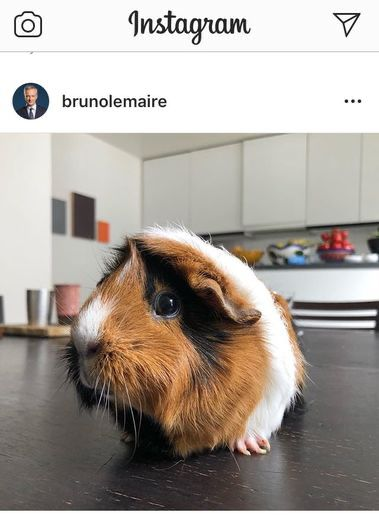
Quel est le lien entre ces différents médias ?What do these posts have in common?
Quel est le lien entre ces différents médias ?What do these posts have in common?
Regardez bienWatch closely
Effet de cadrageFraming effect
« C'est VOLONTAIREMENT mal cadré »"It's DELIBERATELY badly framed"
Un simple choix de cadrage suffit à changer complètement ce qu'on croit voir.A simple framing choice is enough to completely change what we think we're seeing.
De quelles couleurs sont ces drapeaux ?What colours are these flags?
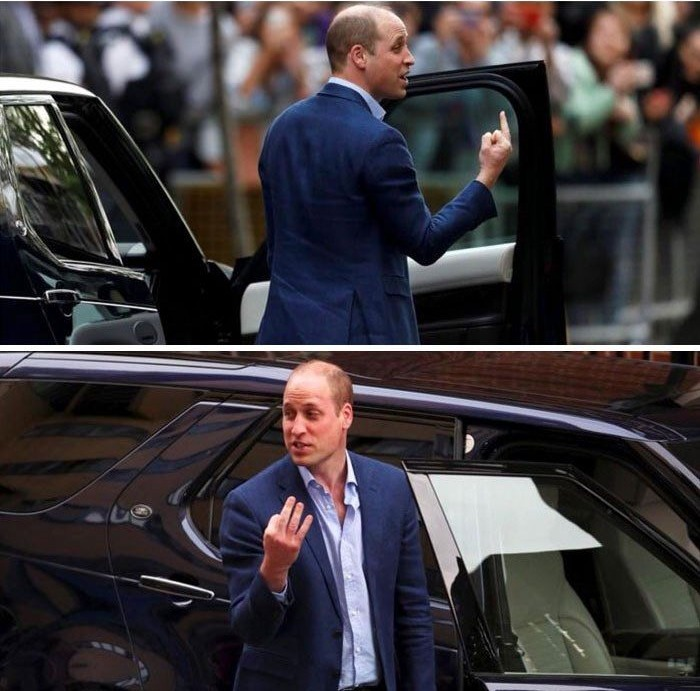
💬"J'ai tout perdu"
À 82 ans, Paul va être expulsé de sa maison car ses belles-filles ont décidé de la vendre
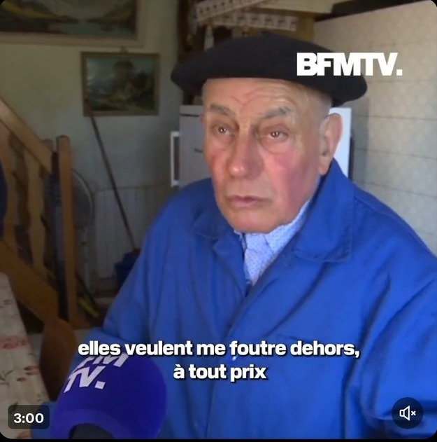
This newspaper clipping is in French.
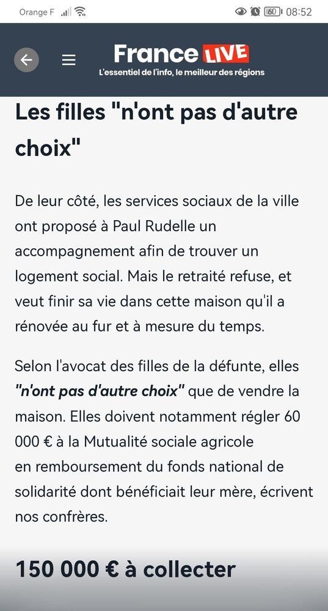
This newspaper clipping is in French.
Une image peut aussi être sortie de son contexteAn image can also be taken out of context
Ce tweet, partagé massivement avec une légende alarmante (« ALERTE »), montre des images de guerre présentées hors de leur contexte réel.This tweet, shared massively with an alarming caption ("ALERT"), shows war footage presented outside its real context.
Ce qu'on voit n'est PAS la réalitéWhat we see is NOT reality
Une photo heureuse ne montre qu'un instant choisi, jamais tout ce qui l'entoure.A happy photo only shows one chosen instant, never everything around it.
Les biais cognitifs !Cognitive biases!
Une distorsion dans le traitement « cognitif » d'une information.A distortion in how our brain "cognitively" processes information.
Explorer tous les biais cognitifs sur PerceptioExplore all cognitive biases on PerceptioBiais de popularité · Effet de HaloPopularity bias · Halo effect
Une personne aimée nous influence sur tout le resteA person we love influences us on everything else
Un champion ou des youtubeurs adorés vendent… autre chose que leur domaine d'expertise. Ce n'est pas leur compétence qui convainc, c'est la sympathie qu'ils inspirent.A champion or beloved YouTubers sell… something outside their field of expertise. It's not their competence that convinces us, it's the likeability they inspire.
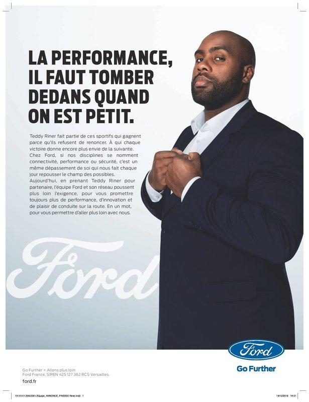
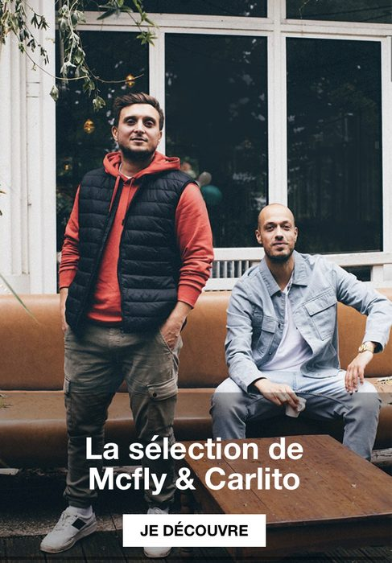
Biais cognitifCognitive bias
L’effet de simple expositionThe mere-exposure effect
Plus nous voyons un produit, plus nous avons tendance à avoir un jugement positif sur lui.The more often we see a product, the more positively we tend to judge it.
TémoignageTestimony
« Combien de sweats noirs t'as vendu ? »"How many black hoodies did you sell?"
Un journaliste interroge la mécanique de la vente par popularité.A journalist probes the mechanics of selling through popularity.
Imaginez…Imagine…
Il est tard, vous êtes chez vous, et vous allez sur les réseaux sociaux pour vous détendre…It's late, you're at home, and you open social media to unwind…
Deux publications s'affichent. Sur laquelle cliquez-vous ?Two posts show up. Which one do you click?
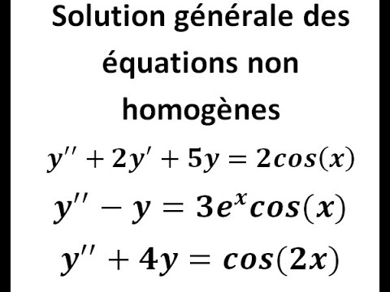
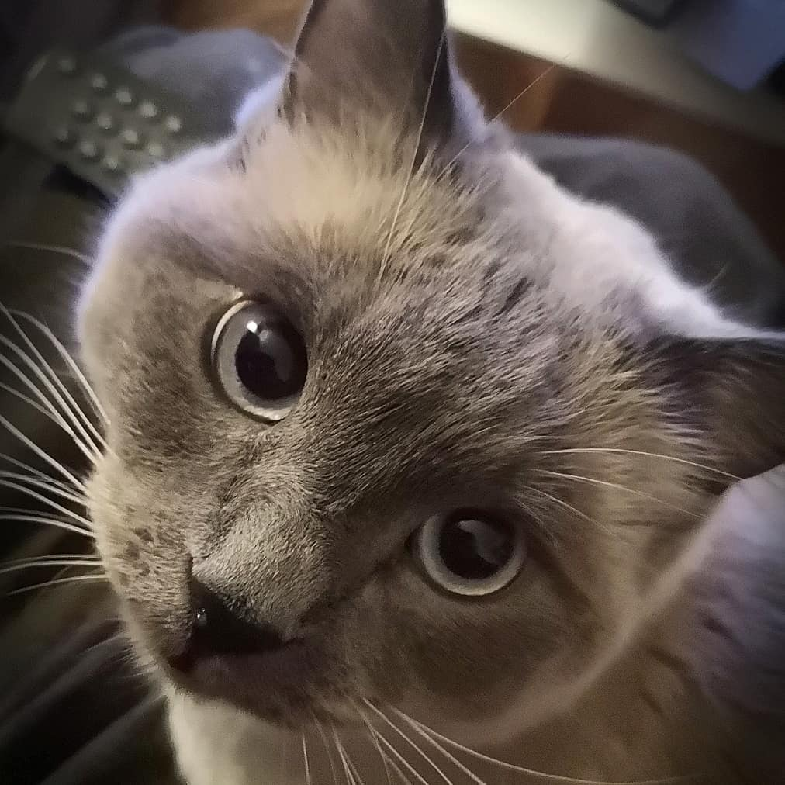
Un créateur en parle lui-mêmeA creator talks about it himself
Norman a des choses à vous direNorman has some things to tell you
Vidéo longue (≈16 min) : le formateur peut avancer directement au passage souhaité.Long video, in French (≈16 min): the trainer can jump straight to the relevant part.
Welcome to…
J'AI RAISONI'M RIGHT
Le biais de confirmation !Confirmation bias!
Quel rapport avec les influenceurs ?What does this have to do with influencers?
Si vous aimez un influenceur, il est difficile de ne pas le croire quand il vous vend quelque chose.If you like an influencer, it's hard not to believe them when they're selling you something.
Comment expliquer qu'on ait pu se faire piéger ?How can we explain falling for it?
Ce n'est PAS la stupidité !It's NOT stupidity!
Biais de l'engagementCommitment bias
Lorsqu'on s'est « engagé » dans une croyance…Once you've "committed" to a belief…
…il est TRÈS compliqué de revenir en arrière.…it's VERY hard to turn back.
Devinette éclairQuick riddle
Répondez vite, sans réfléchir…Answer fast, without thinking…
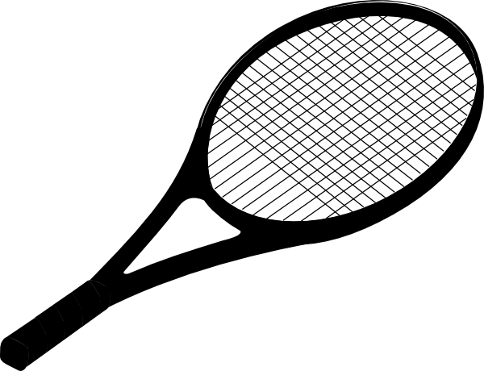
Une raquette et une balle coûtent 12 € au total.
La raquette coûte 10 € de plus que la balle.
Combien coûte la balle ?A bat and a ball cost €12 in total.
The bat costs €10 more than the ball.
How much does the ball cost?
Deux façons de penserTwo ways of thinking
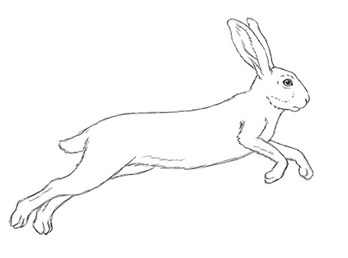
Le système intuitifThe intuitive system
Fonctionne vite !
Consomme peu d'énergie.
Peut faire des erreurs.Works fast!
Uses little energy.
Can make mistakes.
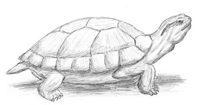
Le système analytiqueThe analytical system
Fonctionne lentement.
Consomme beaucoup d'énergie.
Est plus rationnel, plus analytique.Works slowly.
Uses a lot of energy.
Is more rational, more analytical.
À votre avis, sur les réseaux…What do you think, on social media…
Vos oreilles peuvent, elles aussi, vous tromperYour ears can fool you too
This audio illusion relies on French words and may not work the same way in English.
Le piège de l’empathieThe empathy trap
L’empathie n’est pas QUE positive.Empathy is not ONLY positive.
Elle est utilisée pour FÉDÉRER un groupe… et l’opposer à un autre groupe.It is used to UNITE a group… and set it against another group.
PolarisationPolarisation
Les désaccords publics deviennent virauxPublic disagreements go viral
Vie privée, couples, clashs : ces sujets génèrent énormément d'engagement, et donc de visibilité algorithmique.Private life, couples, feuds: these topics generate huge engagement, and therefore algorithmic visibility.
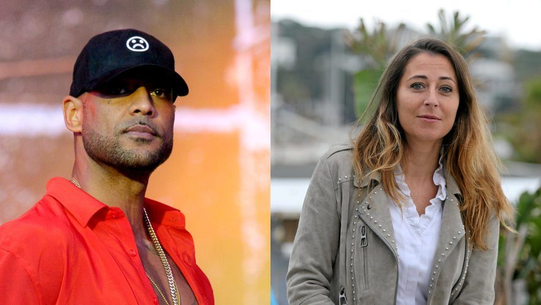
Pensée de groupeGroupthink
RadicalitéRadicalisation ↔ Esprit critiqueCritical thinking
Dans un groupe très soudé autour d'un influenceur, la critique devient difficile à exprimer, et le groupe peut se radicaliser sans s'en rendre compte.In a tight-knit group built around an influencer, criticism becomes hard to voice, and the group can radicalise without realising it.
Les matchs TikTokTikTok battles
Les matchs TikTokTikTok battles
L’emprisePsychological control
Domination intellectuelle ou morale d’une personne sur une autre, ou sur un groupe.Intellectual or moral domination of one person over another, or over a group.
Les influenceurs « financiers »"Finance" influencers
La question est vite répondueThe question is quickly answered
Le lifestyle comme preuve de réussite ?Lifestyle as proof of success?
Enquête · Le ParisienInvestigation · Le Parisien
Melius, la société qui se cache derrière les promesses de fortune des traders des réseaux sociauxMelius, the company behind social media traders' promises of fortune
Vidéo longue (≈8 min) : le formateur peut avancer directement au passage souhaité.Long video, in French (≈8 min): the trainer can jump straight to the relevant part.
S'entraîner à repérer les arnaques sur Radar'naquePractise spotting scams on Radar'naqueQu'est-ce qu'un système pyramidal ?What is a pyramid scheme?
Les premiers entrants sont payés par l'argent des suivants, pas par une vraie activité, jusqu'à l'effondrement, quand plus personne ne rejoint.Early joiners are paid with money from later joiners, not from any real activity, until it collapses, once no one else joins.
Ethos
Construire sa crédibilité par l'imageBuilding credibility through image
Costume, voiture, montre : l'image de réussite sert de preuve, sans qu'aucune compétence ne soit démontrée.Suit, car, watch: the image of success serves as proof, without any competence actually being demonstrated.
Storytelling
Raconter une histoire plutôt que prouver un résultatTelling a story rather than proving a result
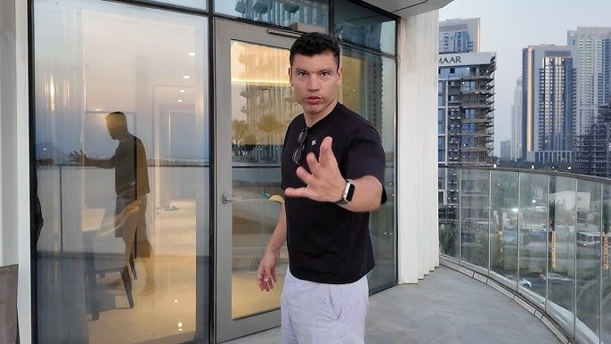
« De rien à tout » : le récit personnel capte l'attention bien mieux qu'un chiffre ou une preuve."From nothing to everything": the personal narrative grabs attention far better than a figure or a proof.
Publicité et contenu sponsoriséAdvertising and sponsored content
Codes promo, liens d'affiliation, « annonces » : la frontière entre conseil sincère et publicité rémunérée est souvent floue.Promo codes, affiliate links, "ads": the line between sincere advice and paid promotion is often blurry.
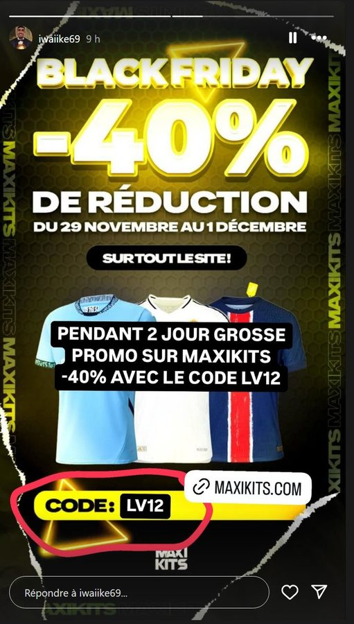
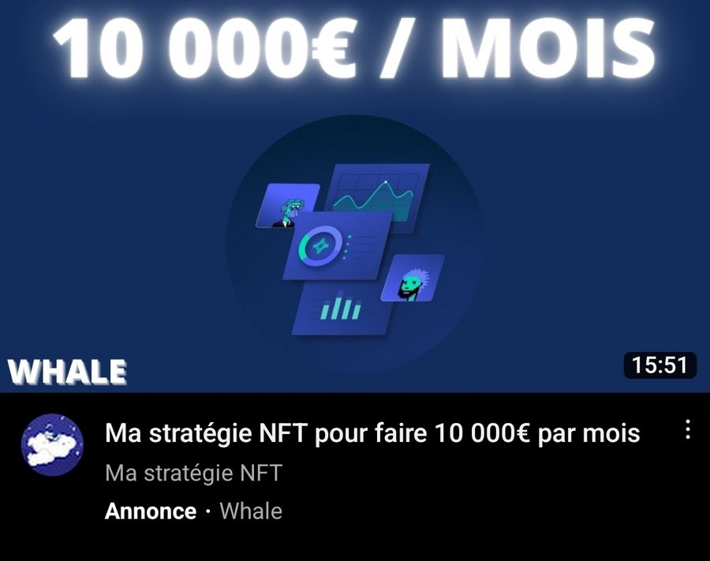
Comment faire attention ?How can we be careful?
Ne pas oublier que les influenceurs ont un intérêt financierRemember that influencers have a financial interest
Ne pas oublier que les influenceurs ne sont PAS vos amis
(même s'ils et elles sont très sympas)Remember that influencers are NOT your friends
(even if they're very likeable)
Les influenceurs n'affichent qu'une partie de leur vieInfluencers only show part of their life
Les influenceurs sont PAYÉS pour vous proposer une vie de rêveInfluencers are PAID to sell you a dream lifestyle
Qu’est-ce qu’on peut faire ?What can we do?
Connaître ces mécanismes pour s’en prémunir.Know these mechanisms to protect ourselves.
Au niveau global : qu’est-ce que vous en pensez ?On a wider scale: what do you think?
Et comment concilier cela avec la liberté d’expression ?And how do we reconcile this with freedom of speech?
Bonus
Piéger les influenceursTrapping influencers
Des journalistes et internautes testent parfois les influenceurs eux-mêmes, en leur proposant de vraies fausses promotions pour voir s'ils vérifient avant d'accepter.Journalists and users sometimes test influencers themselves, by offering them real fake promotions to see if they check before accepting.
ConclusionConclusion
Nous pouvons profiter de leur contenu… en restant vigilant !We can enjoy their content… while staying vigilant!
- 1Se demander quel est l'intérêt de la personne qui parle (financier, symbolique, réputationnel).Ask what interest the speaker has (financial, symbolic, reputational).
- 2Prendre conscience que les influenceurs ne montrent qu'une partie de leur vie.Remember that influencers only show part of their life.
- 3Identifier les contenus sponsorisés et les partenariats commerciaux.Identify sponsored content and commercial partnerships.
- 4Activer une posture analytique avant de croire ou de partager une information.Switch on an analytical mindset before believing or sharing information.
- 5Se méfier des promesses simples à des problèmes complexes.Be wary of simple promises to complex problems.
Merci !Thank you!
Après la séanceAfter the session
Le bilan, les jeux, et votre retourSummary, games, and your feedback
Scannez ce QR code : vous pourrez donner votre retour, revoir le bilan de la formation ou rejouer aux jeux.Scan this QR code: you can leave your feedback, review the session summary, or play the games again.
![QR code vers la page antoninatger.github.io/interventions/retours]() antoninatger.github.io/interventions/retours →antoninatger.github.io/interventions/retours →
antoninatger.github.io/interventions/retours →antoninatger.github.io/interventions/retours →
Martine 🌻 @martine_lili · 1 h
Honteux !!! Mettre un monsieur de 82 ans à la rue… Ces belles-filles sont des p*******s sans cœur 🤬
Kévin @kev_du_94 · 1 h
Bande de s*****s. J'espère qu'elles vont tout perdre elles aussi
Sandrine B. @sandrine_b · 58 min
Le pauvre… 😢 Il a travaillé toute sa vie pour cette maison et ces deux c*******s le jettent dehors
Le Vrai Gaulois @vraigaulois · 55 min
Voilà la famille aujourd'hui. Plus aucun respect pour les anciens. Des o*****s, rien d'autre.
Juju @juju_off · 52 min
Moi à sa place je les déshérite direct ces m*****s 😤
Nathalie G. @nath_g62 · 50 min
Je pleure en voyant ça. Comment on peut faire ça à son beau-père ?? Elles n'ont aucune honte
Dédé du 13 @dede13 · 47 min
Qu'elles viennent me dire ça en face, les p*****s 👊
Sophie @sophie_75 · 44 min
Partagez un max !!! Il faut que tout le monde sache ce que ces v*******s ont fait 🔁
Thomas @thomas_lit · 41 min
Attendez, en fait, on n'a pas tous les éléments… Lisez ça avant de vous énerver 👇
francelive.fr/paul-82-ans-la-verite
Gégé @gerard_retraite · 39 min
Courage Paul ❤️ Et honte à ces deux c*******s, le karma va les rattraper
Lucas @lucas_33 · 35 min
Elles mériteraient d'être expulsées à leur tour, on verra si elles rigolent 😡
Karine 🐾 @karine_animo · 31 min
Dégoûtée de l'humanité. L'argent, toujours l'argent. Des r******s, ces bonnes femmes.
MaxPower @maxpower_off · 28 min
Quelqu'un a leurs noms ? Faut les afficher partout, ces s*****s 😠
Brigitte @brigitte_l · 25 min
Pauvre homme… 82 ans !! Où va le monde 😭😭